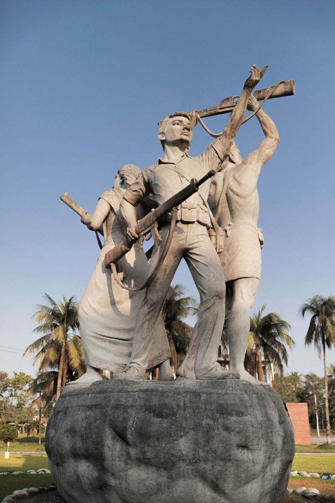
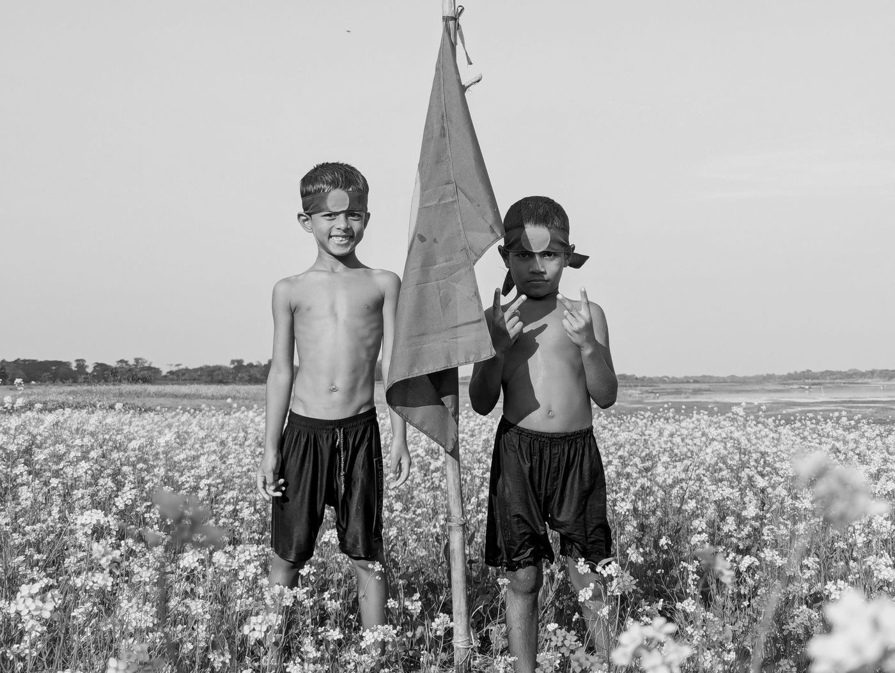

The Liberation War Archive is a digital platform dedicated to preserving the history of Bangladesh's Liberation War of 1971.
This archive brings together historical documents, photographs, interviews and important records to help historians, researchers and the public explore the events and experiences of 1971.
Explore ArchiveThe Liberation War of Bangladesh in 1971 is an important chapter in the history of the country. It represents the struggle, courage and sacrifice of the people.
This archive preserves important documents, photographs, interviews and historical records so that future generations can learn about the events of 1971.
Learn More
Explore some important collections from the Liberation War Archive.
Explore historical documents, records and important materials related to the Liberation War of 1971.
View DocumentsRead and explore interviews that preserve personal experiences and memories from the Liberation War.
View InterviewsBrowse historical photographs that document important moments and people of the Liberation War.
View Photographs